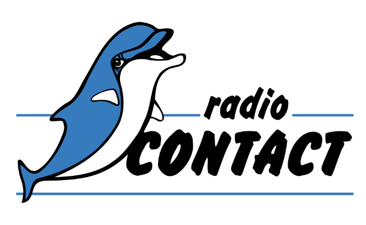
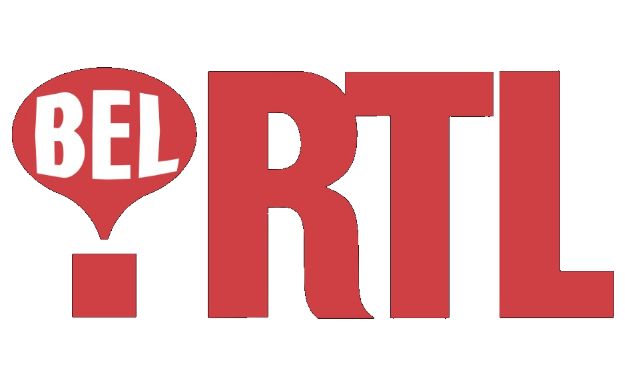
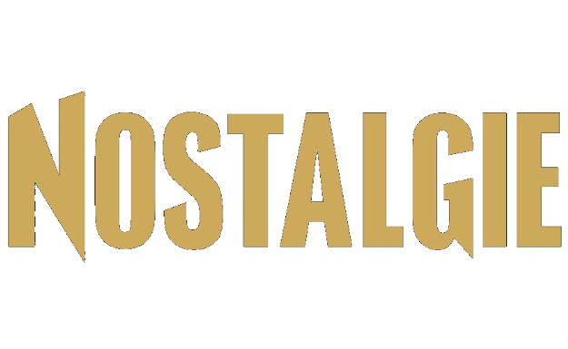
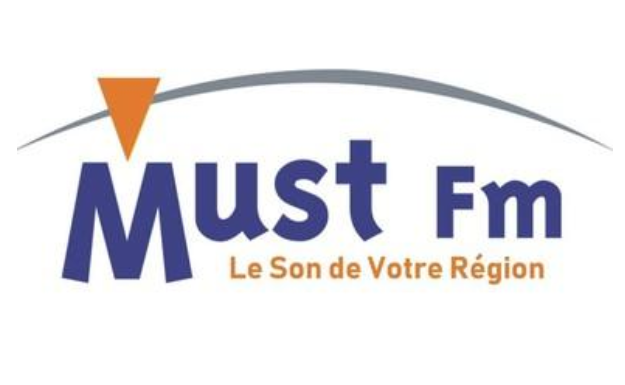
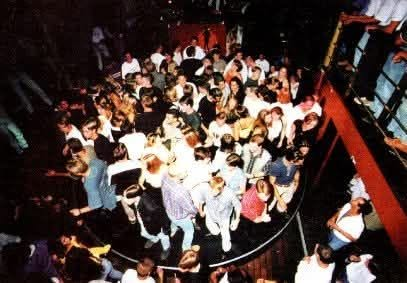
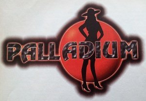
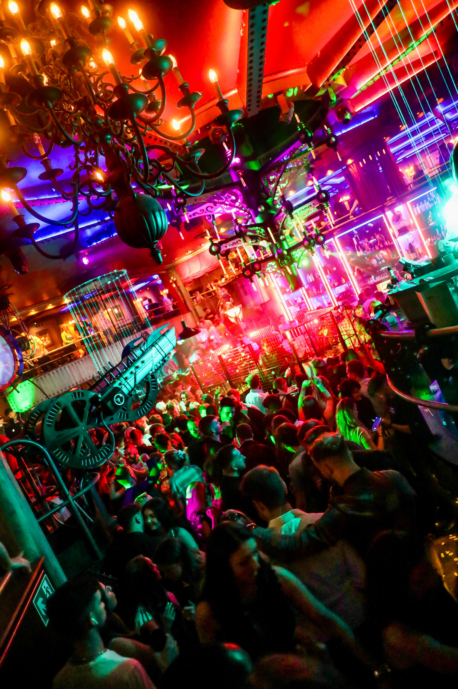
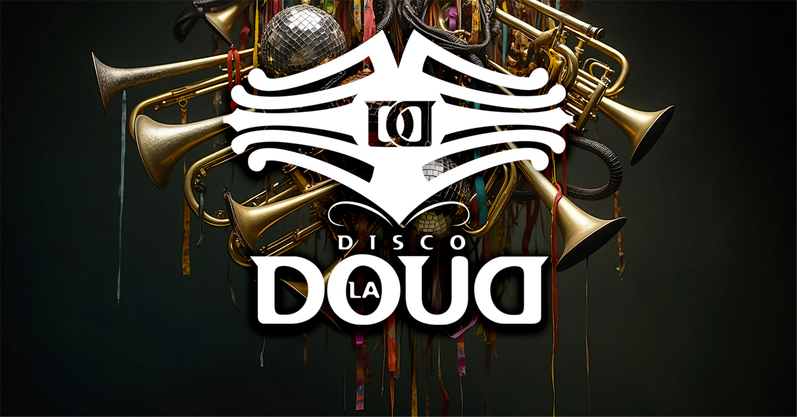

Radio Contact
Animateur & producteur · National
Depuis le milieu des années 90, la radio a été une grosse passion — devenue métier : animer, produire, faire vibrer les ondes.
Des studios nationaux aux antennes régionales, j’ai animé et produit pour plusieurs grandes radios belges.

Animateur & producteur · National

Animateur

Animateur

Animateur & producteur · Namur / Luxembourg

Créateur, tech lead & producteur

Web espagnole diffusant des chansons françaises.
Créateur, programmateur
Mes premières soirées datent de 1985, avec une sono mobile comme tous les jeunes qui démarrent. Très vite, j’ai frappé aux portes des discothèques qui me faisaient rêver — et j’ai été engagé comme DJ.


Baisy-Thy, Belgique
L’une des plus célèbres. Une salle qui a marqué des générations — et l’arrivée de la House dans le paysage musical belge.


Waterloo
Là où j’ai commencé à mixer pour des soirées à thèmes musicaux précis : 80s, 100 % FR, et bien d’autres.
Mais aussi quantité d’autres clubs, plus ou moins gros, et tellement de soirées privées.
Le Nautilus, Manoir Club, Le Mex, Le Butterfly, Le Bunker, Le Palace, Le Manhattan (France), L’Alhambra, Le Boccacio Beach — où j’ai eu des résidences.
Je ne peux pas faire la liste des clubs où j’ai joué comme guest DJ ou host DJ pour une soirée… Mais il y en a beaucoup :-)
J’ai fait partie d’IDC (International DJ Connection), créée par le célèbre DJ Dick Van Gelder. Cela m’a permis de jouer dans d’autres pays que ma Belgique natale.
J’ai été DJ pour des sociétés d’événements comme Studio54 à Braine-l’Alleud, ou Arto qui sonorise les Francofolies.